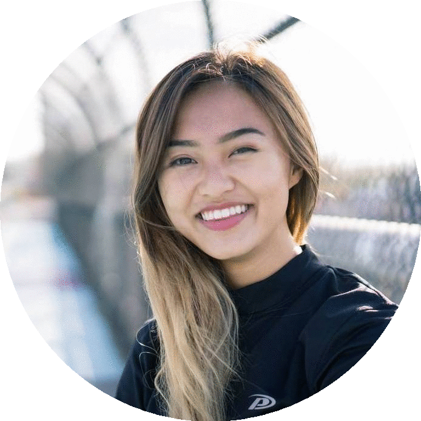
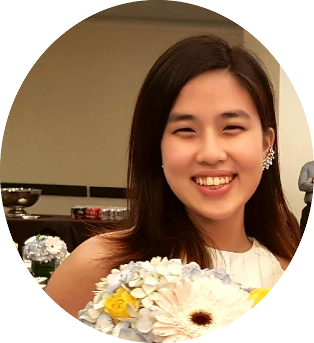
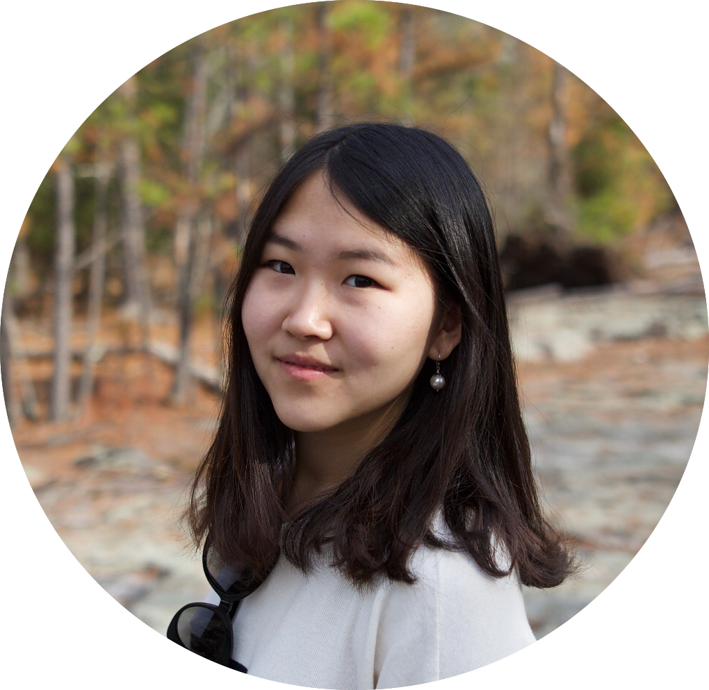
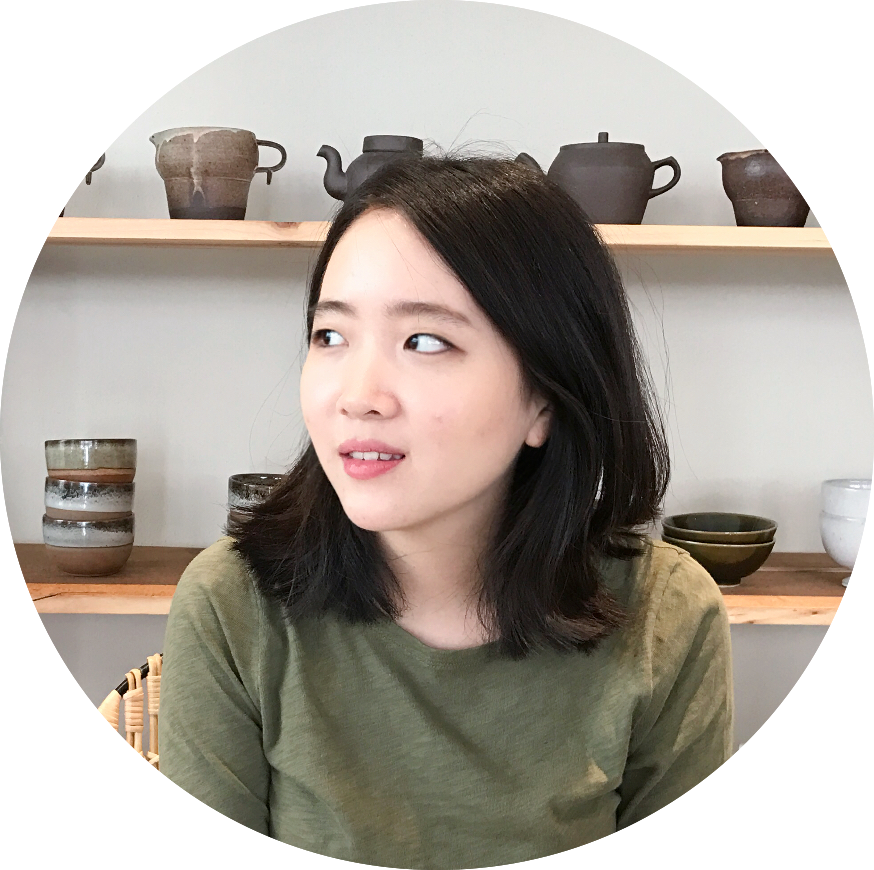
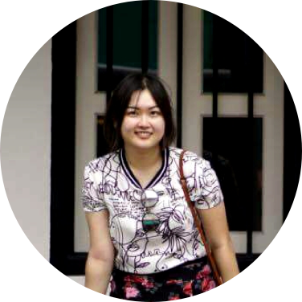
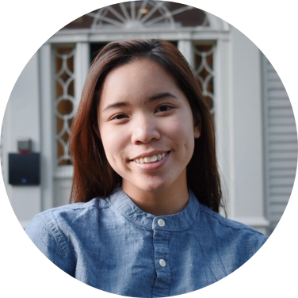
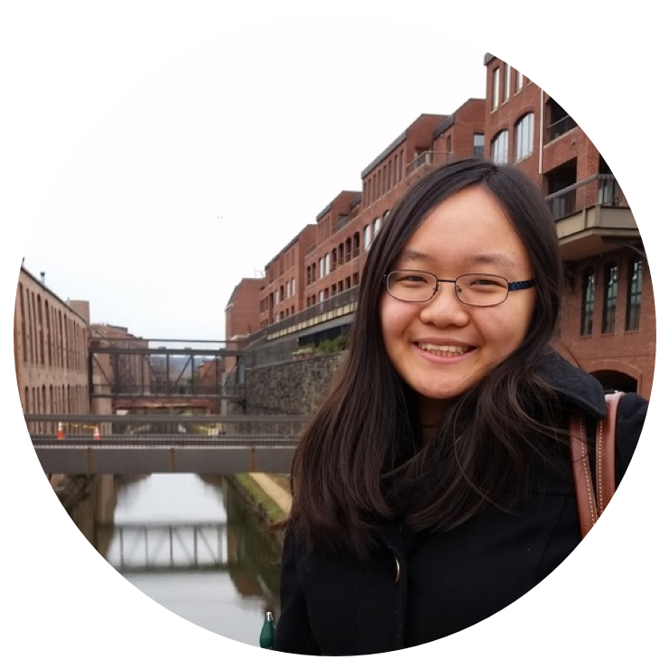
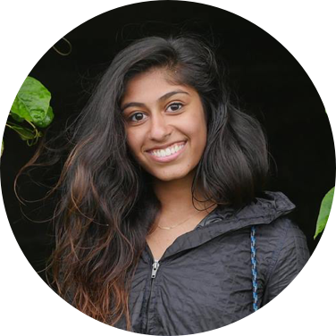
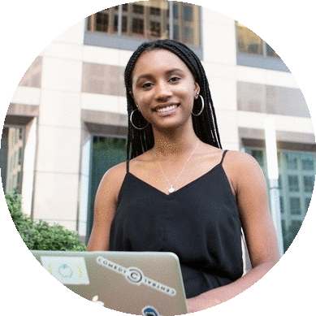

Fall 2017 Organizing Team

Katy Ma
Co-Director

Jesslyn Tannady '18
Co-Director
Yada Pruksachatkun '18
Engineering
Amy Jin '19
Engineering

Dorothy Sun '19
Engineering

Jee Lee '19
Design Chair

Yuna Gan '20
Logistics Chair

Kealani Finegan '20
Logistics Chair

Amber Skarjune '19
Corporate Relations Chair &Treasurer

Evelyn Chen '19
Corporate Relations Chair & Treasurer

Trisha Atluri '20
Social Media & Outreach Chair

Anah Lewi '20
Social Media & Outreach Chair